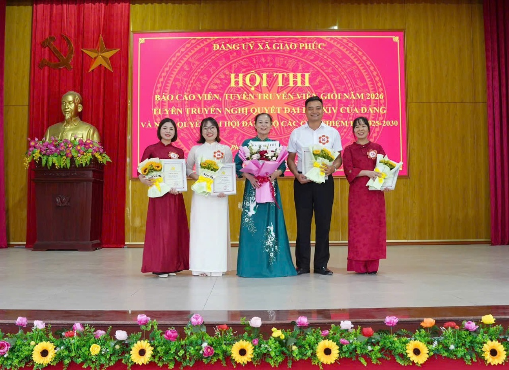
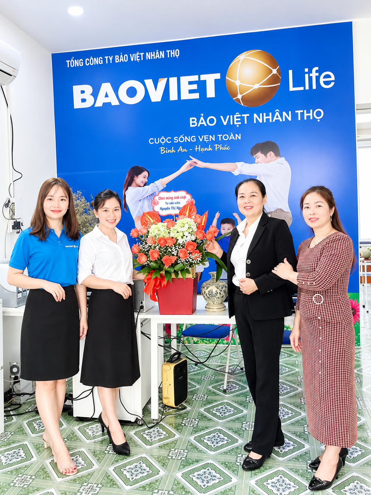
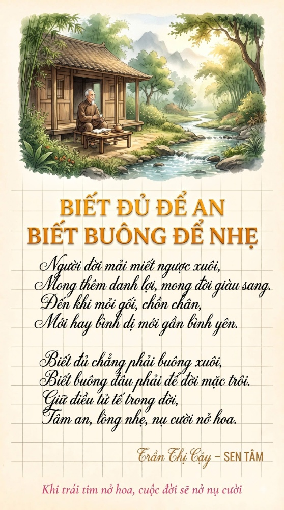
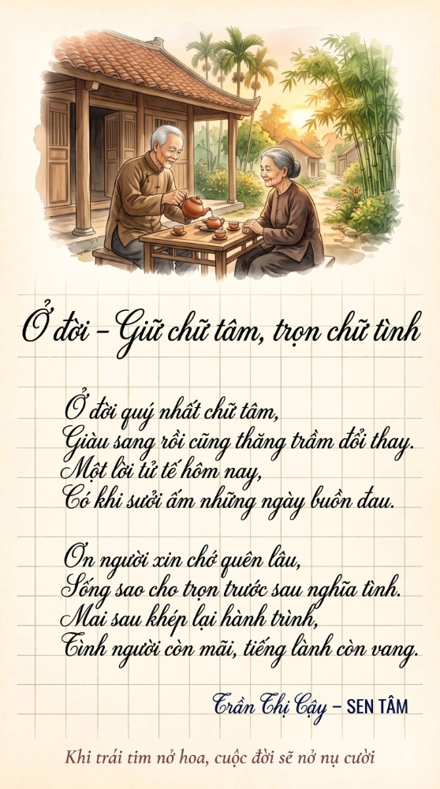
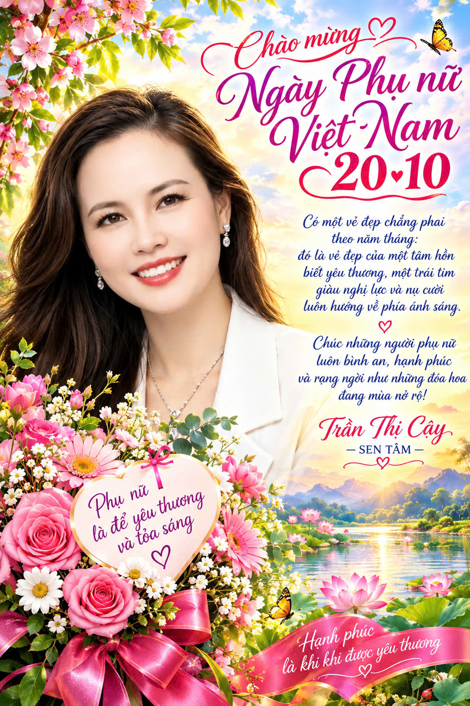

Chào mừng Quý bạn hữu đến với không gian chia sẻ của Trần Thị Cậy — Người đã dành trọn 34 năm thanh xuân cho sự nghiệp trồng người cao quý, tiếp nối sứ mệnh nhân văn bảo vệ con người cùng Bảo Việt Nhân Thọ, tác giả cuốn sách "Sen Tâm" và người tiên phong lan tỏa tri thức trong kỷ nguyên số.
Lấy đóa sen thanh tao làm biểu tượng vươn lên, lấy tình thương gia đình làm cội nguồn và lấy sự phụng sự cộng đồng làm lý tưởng sống.
Biểu tượng cho sự vươn lên mạnh mẽ từ bùn lầy, giữ trọn tâm hồn trong sạch, an nhiên và thanh tịnh giữa dòng đời nhiều biến động.
Gắn bó trọn vẹn thanh xuân với sự nghiệp giáo dục, tận tụy dìu dắt, bồi dưỡng và truyền cảm hứng cho nhiều thế hệ học trò bay cao.
Tiếp nối sứ mệnh nhân văn tại Bảo Việt Nhân Thọ — mang sự bảo vệ an tâm, tài chính vững chắc và tình yêu thương đến từng gia đình Việt.
Tuổi tác không bao giờ là giới hạn. Không ngừng học hỏi, làm chủ máy tính, công cụ AI và sản xuất video ngắn truyền cảm hứng sống đẹp.
Hành trình hơn ba thập kỷ bền bỉ cống hiến, từ phấn trắng bảng đen cho đến sứ mệnh che chở bình an cho từng mái ấm.

34 Năm Cống HiếnGắn bó trọn vẹn thanh xuân với bảng đen và phấn trắng, Trần Cậy đã tận tụy dìu dắt, đào tạo và truyền cảm hứng cho nhiều thế hệ học trò trưởng thành, nên người. Với hơn 20 năm liên tục đạt danh hiệu "Chiến sĩ thi đua" - "Giáo viên giỏi" cấp huyện và cấp tỉnh, đó là minh chứng rõ nét cho sự nỗ lực không ngừng nghỉ, sự chuyên nghiệp và lòng tâm huyết son sắt với nghề.
Bên cạnh đó, Cô là gương mặt quen thuộc, nhiệt huyết trong công tác tuyên truyền của Đảng — mang tri thức và bài học ý nghĩa lan tỏa năng lượng tích cực đến cộng đồng. Cô đã đạt thành tích xuất sắc tại các cuộc thi Báo cáo viên - Tuyên truyền viên giỏi cấp xã và đại diện tham gia thi cấp tỉnh xếp thứ 19/133 Đảng bộ.

Bảo Việt Nhân ThọKhông dừng lại ở bục giảng nhà trường, Trần Cậy tiếp tục bước tiếp trên con đường cao cả: đồng hành cùng Bảo Việt Nhân Thọ để bảo vệ các gia đình Việt Nam trước những rủi ro bất ngờ của cuộc sống.
Với triết lý làm việc bằng cả trái tim và sự thấu cảm sâu sắc, Cô mang đến điểm tựa an tâm, giải pháp tích lũy tài chính bền vững và giá trị nhân văn cao đẹp. Mỗi hợp đồng bảo hiểm trao đi là một lời cam kết che chở, chăm sóc và chở che tương lai cho con trẻ và người thân yêu.
Đúc kết từ trí tuệ nhân loại và sự trải nghiệm nhân sinh sâu sắc của một người mẹ, một cô giáo và một tác giả chân chính.
Khơi nguồn bình an nội tại: Giúp người đọc tìm thấy sự tĩnh lặng, thấu suốt tâm can giữa dòng đời vội vã.
Hiểu về nhân quả & luân hồi: Ứng dụng tinh thần Muôn Kiếp Nhân Sinh vào lối sống lương thiện, bao dung và tích đức mỗi ngày.
Di sản trao tặng các con: Cẩm nang gối đầu giường đong đầy tình mẫu tử cho bốn thiên thần nhỏ trưởng thành vững chãi.
Định hình ba giá trị cốt lõi vô giá mà tiền bạc không thể mua được: Sức khỏe của Thân thể — chiếc cầu nối thực hiện ước mơ; Trí tuệ của Tâm hồn — ngọn hải đăng soi đường chân chính; và Trải nghiệm sống đích thực — tài sản phong phú nhất đọng lại trong suốt kiếp nhân sinh.
Hai phương châm sống đã trở thành kim chỉ nam trong từng hơi thở của Trần Cậy. Giữ tâm thiện lương để không vấp ngã trước cám dỗ, biết dừng lại ở mức "vừa đủ" để tâm hồn luôn thanh thản, đón nhận từng ngày trôi qua với nụ cười hoan hỷ và lòng tri ân sâu nặng.
Bức tranh tâm hồn phong phú, ngọt ngào qua những giai điệu ngợi ca đất mẹ, người phụ nữ và quê hương thanh bình.
Những giai điệu ngọt ngào, sâu lắng do chính Trần Cậy sáng tác và gửi gắm cảm xúc, là lời tri ân gửi đến cuộc đời, đến những đóa sen kiên cường của đất nước Việt Nam.
Tuổi tác chưa bao giờ là ranh giới trên con đường hoàn thiện bản thân và ứng dụng công nghệ hiện đại.
Bắt đầu từ những thao tác đầu tiên trên chiếc điện thoại thông minh, Trần Cậy đã nhanh chóng làm chủ máy tính cá nhân, khai phá các công cụ Trí tuệ Nhân tạo (AI) tiên tiến và công nghệ dựng video ngắn (Reels, TikTok).
Phát triển mạnh mẽ trên trang "Chuyên gia Trần Cậy" cùng trang cá nhân "Trần Cậy", nơi mỗi bài đăng, mỗi video đều là một thông điệp tích cực gieo mầm hy vọng và niềm tin cuộc sống.
Luôn tràn đầy năng lượng với lối sống tích cực, duy trì thói quen đi bộ hàng ngày và rèn luyện Thân - Tâm - Trí mỗi sớm mai, truyền cảm hứng sống khỏe mạnh tới mọi lứa tuổi.
Một người mẹ, người bà hạnh phúc trong tổ ấm đa thế hệ ấm cúng, luôn dành trọn tình thương yêu, làm tấm gương sáng mẫu mực cho con cháu tiếp bước.
Những hình ảnh chân thực ghi lại từng dấu mốc quý giá trong sự nghiệp, sáng tác và tổ ấm gia đình.


